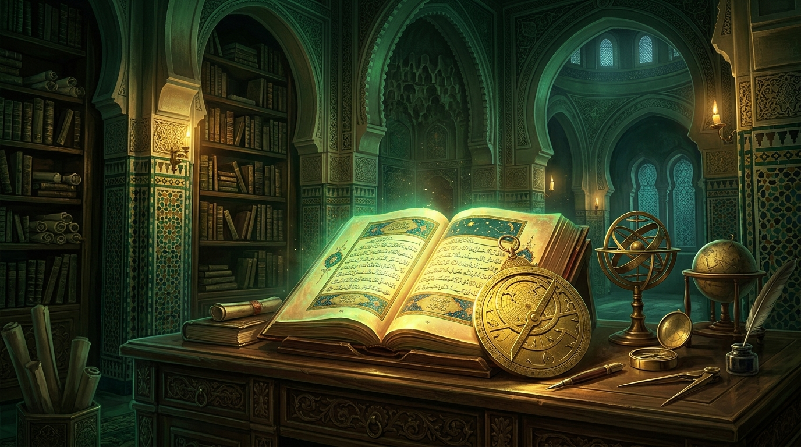

Raison & Révélation
Étudier les rapports entre démonstration rationnelle, révélation, interprétation et recherche de la vérité dans l’histoire de la pensée islamique.
💡 Les trois principes fondamentaux du parcours
Identifier les différentes sources de connaissance
La pensée islamique articule l'évidence rationnelle, l'observation empirique et le texte révélé dans une quête unifiée de vérité.
Distinguer raison, interprétation et transmission
L'exercice herméneutique (ta'wīl) encadre la compréhension du texte sans abolir la rigueur logique de la démonstration (burhān).
Étudier les désaccords dans leur contexte historique
Les débats majeurs entre philosophes (falāsifa), théologiens (mutakallimūn) et juristes reflètent la vitalité intellectuelle de l'époque.
🏛️ Notions essentielles & repères intellectuels
Les concepts fondamentaux développés par les penseurs de ce domaine :
Al-Burhān (La Démonstration)
Le mode d'argumentation logique le plus rigoureux, fondé sur des prémisses certaines et nécessaires.
Al-Ta'wīl (L'Interprétation)
La démarche herméneutique permettant de dégager le sens profond des textes en accord avec la raison.
Fasl al-Maqāl (Accord Raison-Foi)
Thèse majeure d'Ibn Rushd affirmant qu'une vérité rationnelle ne peut contredire une vérité révélée.
📚 Études et articles de référence

Raison et Révélation dans la pensée islamique classique
Une étude approfondie des méthodes de réconciliation entre la logique d'Aristote et la Révélation chez Ibn Rushd et Al-Ghazali.
Lire l’étude →
Citations majeures des penseurs et sages musulmans
Une sélection commentée des plus belles sentences sur la vérité, la science et la recherche de la sagesse.
Lire l’étude →👥 Figures intellectuelles associées
Abū Hāmid Al-Ghazālī
Preuve de l'Islam (Hujjat al-Islām)Penseur magistral, auteur d'Al-Munqidh min al-Dalāl, ayant analysé les limites de la raison et le rôle de l'intuition spirituelle.
Ibn Rushd (Averroès)
Le Grand Commentateur & JuristeDéfenseur absolu de la rationalité démonstrative et auteur de Fasl al-Maqāl sur l'accord de la philosophie et de la religion.
Ibn Sīnā (Avicenne)
Le Maître Éminent (Al-Shaykh al-Ra'īs)Créateur d'un système philosophique et médical monumental unifiant métaphysique, logique et connaissance de l'âme.